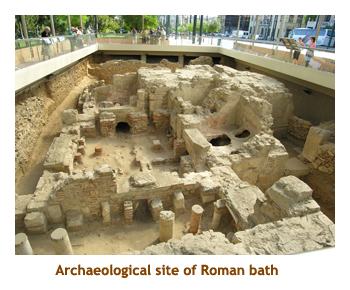
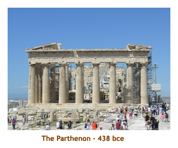

[ Home ] [ Travel ] [ Photography ] [ Pets ] [ Games] [ Rowing] [ Physics ]


A Visit to Athens and the Greek Isles - Part 1
Travel
Cruises
Past Cruises (Diaries)
Future Cruises
Rogues Galleries
Land Trips
Diaries (Land Trips)
Hawai'i - Big Island - 04'01
Hawai'i - Maui - 05'02
Hawai'i - Big Island - 04'03
Hawai'i - Kaua'i - 09'04
Hawai'i - Big Island - 04'06
Hawai'i - Maui - 04'06
Mainland China - 05'07
Phoenix, Arizona - 12'07
Greek Isles - 05'08
Hawai'i - Kaua'i - 09'08
Hawai'i - Big Island - 09'09
Hawai'i - Maui - 05'12
Hawai'i - Big Island - 04'13
Ireland - 08'13
Mexico - Cancun 11'13
France/Belgium/Lux 07'15
Hawai'i - Big Island - 05'17
England / Wales - 06'17
Hawai'i - Big Island - 09'19
Photography
Cameras
Underwater
Pets
Tara
Blackie
Whitey
Muffy
Ollie
Rusty
Fluffy
Rufus&Dufus
Games
Rowing
Physics
Day 1, 2 (May 21, 22) - Flight to Athens

Although there were 21 people in our group, only 17 of us were flying
together. One couple was spending a couple of "pre-trip" days in Rome,
and another couple were using air points on a different flight.
We were flying to Frankfurt
(9 hours) and then on to Athens (3 hours). Because of the distance ,
we would arrive in Athens on the next day. We met at the Calgary airport
at 11:30 AM. We were delayed a bit for takeoff and finally left just
before 2 PM. The Frankfurt flight
was long! They fed us 2 times on the flight so we certainly didn't go
hungry. Our group of 17 was randomly distributed in the middle of
the aircraft, but I think all the couples were sitting together. The plane was
an A330 so we had two aisles in which to do laps.
We arrived in Frankfurt pretty much on schedule and had a 2.5 hour
wait for the next leg to Athens. The second leg seemed much faster being
only about 2.5 hours in the air.
Arriving at the Athens airport, our first problem was that the tour company (Hermes in Greece) was not aware of an earlier flight time change, so there was no bus to pick us up. We ended up taking taxis to our hotel - the Amalia Hotel in central Athens. The hotel was very nice and located just a couple of blocks from the Plaka area. We could walk to all the historical sites.
After checking in and refreshing ourselves, we did an orientation walk
around the area. Right next to the hotel was Syntagma Square. There we
stopped in front of the Parliament Building and saw the "evzone" guards at
attention. Just behind was the Presidential Palace, built in 1878.
Then we headed into a huge park area (the National Gardens)
with lots of shady trees. The park was established in 1840 and was
originally called the Royal Gardens. In the center of the park was a small zoo
but most of the animals seemed to be cats and dogs.
Leaving the park, we emerged across from the Kallimarmaro
Stadium that was (re)built for the 1896 olympic games. The stadium is
built on the exact site of the Panathenaic Stadium built by Lykourgos
in 330 bce. Continuing the walk
we passed the Temple of Zeus and Hadrian's Gate (to be visited on
another day) and then
rounded the bottom of the park to an excavation of a Roman bath site.
This site was discovered while digging a ventilation tunnel for the Athens
Metro. The baths had been built in the time of Hadrian, in the 3rd century ce.
We spent some time examining the site and
then it was back to the hotel to get ready for dinner. During our walk we noticed
many homeless dogs and cats wandering around. They were well fed, so
somebody must be looking after them.
 After cleaning up in the hotel, we headed out for dinner in the Plaka area. The restaurant (I think it was called the Plaka Tavern) had a large sidewalk section as most of the restaurants seemed to have. Our meal was very good. The dinner was included as part of our trip package. However the staff tried to rip us off by overbilling us by about Euro 200. When our leader (John) discovered this, the staff made some lame excuses to justify the bill amount. But John stuck to his guns and the amount was corrected. Gotta watch out here!
After dinner, we had some time to walk around the Plaka and check out the souvenir
shops before heading back to the hotel for the night. The other 2 couples had
arrived at the hotel, so we now had our full contingent of 21 people.
Day 3 (May 23) - First full day in Athens
Changing time zones is always difficult for us. Although we were tired, we both woke up around 4:00 AM. I headed to the internet terminal in the lobby to write to the folks back home and let them know we had arrived safely. Eventually it was 6:30 so we could do the breakfast buffet. The hotel put out a really good spread for breakfast each morning - cereal, bread, toast, fried and scrambled eggs, sausages, bacon, yoghurt, tomatoes, cucumber, sliced meats, cheese, cut up fruits and melons, fruit juices, etc. It was great! We usually hit the buffet at 6:30, as soon as the restaurant opened.
After breakfast we all gathered at 9:00 for our walk to the Acropolis. We met our
guide Vicki, who was to spend the next few days with us in Athens and Delphi. We set out from
the hotel walking down to Hadrian's arch, and then turning west along the edge of the Plaka.
We passed the Theatre of Dionysos (we would visit this later) and the new Acropolis
Museum (opening later this year, all going well). Along the middle of the roadway workmen were
erecting a long covered structure that would be used by booksellers for an upcoming
book fair. The structure went on for 200 or 300 meters. Rounding the south end of the
Acropolis we passed the Theatre of Herodes Atticus and headed up the path to the
modern day ticket entrance to the Acropolis. There were lots of tourists everywhere.
After entering the park, the pathway took us to an overlook down into the Theatre of Herodes Atticus, built in 174 ce in memory of his wife. This is where "Yanni - Live at the Acropolis" was filmed. Apparently a lot of outdoor concerts are performed there each year. The original theatre had a cedarwood roof that improved the accoustics and made it weatherproof, but today it is open to the sky.
We then walked through the Beule Gate and up to the Propylaia, the ancient
entrance to the Acropolis. To the right, in front of the Propylaia, was the small
Temple of Athena Nike built in 421 bce. The Propylaia was
constructed in 432 bce as the "new" entrance to the Acropolis. There was much
restoration work going on and the structure was shrouded with metal scaffolding.
It was built on quite a slope, so there are many steps to walk up. The Propylaia
has been used for many things during its history and has suffered much damage
through accident, war and lightening.
Then we walked over to the Erechtheion and stopped at the famous olive tree. This tree is planted where Athena first planted her olive tree in a competition against Poseidon. Vicki explained the lineage of the current olive tree, but I have somehow managed to forget the details. There was a girl working on restoring the marble stones of the Erechtheion, immediately behind the tree.
The Erechtheion was built in 406 bce and is located on the most sacred site
of the Acropolis, that being where the competition between Athena and Posiedon
took place. It was named after Erechtheus, a mythical king of Athens. It is notable for
the famous caryatid columns in the shape of women. Inside was housed an olive wood
statue of Athena (now gone). The building has had a range of uses over the centuries
with much damage and restoration occuring along the way.
 Finally, we walked over to the most famous of all remains - the Parthenon. Once again restoration work was in progress and scaffolding was everywhere. The Parthenon was built in 438 bce and originally housed a 12 meter statue of Athena Parthenos. As with the other ancient buildings, it has seen many uses and damage over the centuries.
All done with the Parthenon, we left along the north edge of the base of the
Acropolis returning to the Plaka. There we had lunch together at a sidewalk cafe.
Then it was "on your own" time for the rest of the afternoon, dinner and the evening.
At lunch it was announced that we would be having a gift exchange at the end of the
trip, so Marj and I spent the afternoon shopping for gifts. All of the souvenir shops
seemed to carry exactly the same stuff, but the prices really varied from shop
to shop. For dinner, neither of us were
very hungry, so we satisfied ourselves with gelato. I can't remember doing anything
spectacular that evening - I think we just wandered around the Plaka, then headed
back to the hotel to read and get an early sleep.
Day 4 (May 24) - Second full day in Athens, Sounion
We're still not synchronized with the time in Greece, so I was up at 3:30 AM writing an email to the family. Shouldn't have gone to bed so early last night! Our hotel had a rooftop area on the 7th floor. It was in the process of being renovated, perhaps for a restaurant. The view was wonderful from the roof and you could see almost 360 degrees. The view of the Acropolis was excellent. This morning, we headed up early to the rooftop to see the sunrise on the Acropolis. The angle was perfect as the rising sun was behind us when facing the Acropolis. I got some good photos of the hill and the buildings upon it. A soft red light.
After breakfast we met in the lobby to catch the bus to the National Archaeological
Museum. The drive to the museum was interesting as we snaked through narrow
downtown streets. Along the way we passed several noteable buildings, including
universities and museums. I've forgotten what they were.
 The National Archaeological Museum was amazing, The first area we visited was
a collection from Mycenes and Tiryns. The mask of Agamemnon was superb.
We had not yet been to the actual sites of Mycenea and Tiryns yet, but it was an
interesting introduction to the excavations that we would be visiting later on in the trip.
Then we visited galleries that featured vases, sculptures and other artifacts from
ancient Greece. We also toured a collection of treasures from the Cycladic islands.
What a great museum. We didn't have time for the other areas of the museum, such
as the Egyption collection. The bookstore / gift shop had numerous interesting
things you could buy. Fortunately I resisted.
The National Archaeological Museum was amazing, The first area we visited was
a collection from Mycenes and Tiryns. The mask of Agamemnon was superb.
We had not yet been to the actual sites of Mycenea and Tiryns yet, but it was an
interesting introduction to the excavations that we would be visiting later on in the trip.
Then we visited galleries that featured vases, sculptures and other artifacts from
ancient Greece. We also toured a collection of treasures from the Cycladic islands.
What a great museum. We didn't have time for the other areas of the museum, such
as the Egyption collection. The bookstore / gift shop had numerous interesting
things you could buy. Fortunately I resisted.
After we exited the museum, we boarded the bus for the Museum of Cycladic Art.
This museum opened in 1986 and is located in what used to be the home of Otto and
Athina Stathatos . It was much smaller than the National Archaeological Museum,
but had an amazing collection of the unique Cycladic figurines. I really enjoyed
this museum as well. Then it was back on the bus and back to the hotel.
We arrived at the hotel around 2:00 for lunch and the afternoon "on our own". Most of us hung out around the Plaka area, but one couple hopped on the train and had lunch and the afternoon in Piraeus. We weren't too hungry so walked to a bakery bordering Syntagma Square and bought some pre-made sandwiches and some chocolate milk. We ate these back at the hotel. John had arranged an optional walking tour so we joined the group at 3:00 in the lobby and headed out. We stopped first at the Temple of Olympian Zeus. We walked around the site looking at the enormous columns. The temple is the largest in Greece. Construction started in the 6th century bce and was completed some 650 years later. Only 15 of the original 104 columns remain.
Then we walked over to Hadrian's Gate. This was constructed during the reign of the emperor Hadrian (131 ce) and was a gift to the city.It was positioned to mark the boundary between the ancient city and the new Athens of Hadrian. Finally, we walked to the Theatre of Dionysos. It was (re)built in 326 bce, but then enlarged later by the romans. It was the first theatre to be built of stone.
When we arrived back at the hotel, we heard the news that one of the ladies
had had her purse stolen while sitting at an outdoor restaurant in the Plaka.
What a hassle she had
to go through to replace her passport, credit cards, etc. I think she spent a good
part of two days at the consulate obtaining the new documentation.
At the hotel, we regrouped at 6:00 to take the bus to Cape Sounion to see the temple of Poseidon. The trip south was very interesting, hugging the coastline. We arrived at the site and parked at the entrance to the site, by a large restaurant., We bought tickets and hiked up to the temple. Along the way we saw a Rock Partridge, common in the Cape Sounion area. The temple was amazing, with no restorative scaffolding! The temple was built in 444 bce.
Around 8:00, we returned to the bus and headed off to a restaurant for
dinner. We had gone about 15 minutes along a narrow road, when the guide
realized that the restaurant we were booked for was the one at the temple!
We had to continue on for quite a distance before there was a place where
the bus could turn around. And, of course, we ended up back where we
had originally been parked, but 45 minutes later!
We had a very nice dinner at the temple. As it got
dark, lights lit up the temple above us, like it was floating in the air. What a
beautiful evening. We then drove back along the coast in the dark, with the
lights of the houses twinkling along the road. We arrived back at the hotel
at 11:00 and headed to bed.
Day 5 (May 25) - An outing to Delphi
 Up early again today and the usual great breakfast. We had to meet in the lobby
at 8:30 to board the bus bound for the ancient city of Delphi. It was going to be
another hot day. It was about a 2.5 hour drive through the country. Part way
through the trip we stopped for a bathroom break at a truck stop. There was
the usual snack bar / restaurant / gift shop complex. We wandered through the
shop looking for some snacks, as our lunch was going to be quite late.
It is always interesting
to look at packaged snacks in another country.
Up early again today and the usual great breakfast. We had to meet in the lobby
at 8:30 to board the bus bound for the ancient city of Delphi. It was going to be
another hot day. It was about a 2.5 hour drive through the country. Part way
through the trip we stopped for a bathroom break at a truck stop. There was
the usual snack bar / restaurant / gift shop complex. We wandered through the
shop looking for some snacks, as our lunch was going to be quite late.
It is always interesting
to look at packaged snacks in another country.
Just before reaching Delphi, as we wound along the side of a mountain,
we passed through the "alpine" village of
Arachova. This is a very new ski village servicing the nearby Mount
Parnassus ski facility. The major industry seems to be selling carpets
and furs.The bus twisted through the very narrow streets. What
a great view of the surrounding valleys. At about 11:00 we
finally reached ancient Delphi.
We purchased entrance passes and headed up the Sacred Way path.The first
area we passed through was the treasuries. These buildings held the offerings
of people from different cities. The best preserved building was the Athenian
Treasury. It was built around 490 bce, soon after the Battle of Marathon.
Then we travelled further up the Sacred Way to the Temple of Apollo. This
is the temple where the famed oracles lived. According to an article in
Scientific American, there were volcanic fault lines
directly below the temple leaking ethylene gas. This gas creates a trance-like
state which could explain the behaviour of the Pythia.
The structure remaing today dates from the 4th century bce. Some reconstruction
has been done in recent years.
 Continuing up the path we came to the remains of a theatre, with seating
for about 5,000 people. It dated to the 5th century bce. This was the limit
of the guided tour portion of our exploration of Delphi. Most of us
continued up the mountainside to the site of the stadium.
Continuing up the path we came to the remains of a theatre, with seating
for about 5,000 people. It dated to the 5th century bce. This was the limit
of the guided tour portion of our exploration of Delphi. Most of us
continued up the mountainside to the site of the stadium.
The stadium is almost 200 meters long and is the site where the Pythian Games were held every 4 years starting in 582 bce. The rows of seating along the edges held about 7,000 people. The prizes to the winners of the events were purely honorary, receiving laurel wreaths and the right to have a statue in the sanctuary.
Finally we wound our way back down to the park entrance to visit the
Museum of Delphi. The museum was very interesting with many statues and
artifacts from the site. The most notable statue was that of "The bronze
Charioteer", commemorating a chariot victory in the Pythian
Games of 478 bce. We also saw the famous "navel" stone, and a large mosaic
floor reconstruction.
Benig almost 3:00, we loaded back into the bus to head back for lunch. On the lower side of the highway was the Sanctuary of Athina, but we didn't stop there. We stopped in the village of Arachova at a wonderful restaurant overlooking the valley below. As in most restaurants, the waiters were smoking. Not used to that any more! We were served chicken and pasta which was very good.
We arrived back at the hotel around 6:30 and had the rest of the evening
to ourselves. Because we had such a late lunch, we just had gelato and a beer
for dinner. After dark we headed up to the hotel rooftop to take pictures of
the Acropolis lit up in the dark. It was really beautiful, but needless to say my
photos didn't come out that well. Time for bed.
Day 6 (May 26) - Athens wrapup and off to Pireas
Today was to be a busy day touring a number of Athenian sites before heading off to Piraeus and the ship. We breakfasted at the usual 6:30 time. Our luggage had to be out in the lobby by 8:45 for storing in the hotel's storage room. We joined the group in the lobby at 9:00 for the walking tour. We headed off in the direction of the Plateia Monastiraki. As we entered the district, we passed the Panagia Gorgoepikos Church. It was built in the 12th century. It has beautiful carvings inside, but we didn't enter the church.
Further on, we came to the excavation site containing Hadrian's Library.
The library was built in 132 ce and included a garden with a pool. A couple of
blocks away we came to the site of the Tower of the Winds. This site was
once part of the larger Agora. The tower was originally a water clock and
weather vane, built by the Syrian astronomer
Andronikos Kyrrestes in the 2nd century bce. it is an octagonal structure, with
mythical beings carved on each side representing the 8 winds (N, NW, W, SW,
S, SE, E and NE). Nearby were the ruins of the public latrines, which prompted
John to lecture us graphically on the status of Roman hygiene. Across the open
field of the site was a Turkish Mosque (the Fethiye Mosque) . It was built in the
15th century to commemorate Mehmet the Conqueror's visit to Athens.
Then we walked a short distance onto the grounds of the main area of the ancient Agora. This is a large area containing many ruins, some dating as far back as the 6th century bce. We entered the Agora from the Northwest corner and immediately encountered the alter of the twelve gods and the double row of statues. We also encountered a (headless) statue of the Emperor Hadrian. From there we turned up the path to a large temple, the Hephaisteion (also known as the Theseion). This temple was fairly complete and was built in 440 bce. On one side of the temple was a large grassy field, and two small tortoises were ambling along on the grass. (I say small, because they were nothing like the 500 pounders I had seen in the Galapagos).
Coming back down from the temple hill, we encountered the Monument
of the Eponymous Heroes. This is a long stone structure upon which sat
the bronze statues
of the ten "heroes" who represented the ten tribes of Athens. The structure was
also used as a public notice board where proposed legislation, decrees and
announcements were posted.
Then we headed across the site to the Stoa of Attalos. This huge building had been reconstructed in 1956 thanks to a large donation by John D Rockefeller Jr. It is the most complete building on the site. On the steps were a few young girls painting scenes of the Agora. I guess it was an art class. We also encountered several homeless dogs who seemed quite content. The stoa was very interesting. In the middle of the stoa was a small museum with artifacts from the site. Of special interested were fragments of pottery with names scratched on them that were used to vote people into exile (an early version of Survivor). Along the length of the open corridor were statues of various noteables.
We recrossed the site to the Kerameikos, an ancient cemetery dating
back to the 12th century bce. There we saw some very old graves and
some famous stelae such as the Stele of Demetria and Pamphile (4th century
bce). We found a shady area nearby and sat down while John read the address
given by Perikles to the Athenians honouring the fallen Athenian soldiers
during the Peloponnesian War.
We then walked some distance to the site of the ancient city walls and entrance gate. The walls were built in the 5th century bce by Themistocles (I suspect he had some help). The walls divided the city into an inner and outer part. There were two gates - the one we saw was the Dipylon Gate.
Done with our exploring, it was about 1:00 so we headed back to the Plaka area for lunch and a short break on our own. Once again we just grabbed some gelato and wandered the Plaka. Then we met in the hotel lobby at 3:00 to transfer our luggage to the bus and head to Piraeus. There was a bit of a holdup as one of the ladies in our group took a wrong turn in the Plaka and ended up lost. She eventually found her way to the hotel and we headed off to Piraeus.
It was a short drive to Piraeus harbour - maybe 30 minutes or so. Along the
way we passed the football stadium where Olympiacos play. The bus rounded
the harbour and let us off right by our ship - the Kapetan Antonis. At this point
I'll wrap up "Part 1" with a description of life aboard the ship.
Random Ramblings #1 - Reflections on the Kapetan Antonis
This ship was a new experience for us. We didn't know what to expect,
having never been on such a small ship
before. As it turned out, we had mixed feelings about the ship. The size of
the ship didn't bother us, but the accomodations were not the best. Here is a
summary of the ship, what we liked and what we didn't.
The Kapetan Antonis was built in 1979 and was refurbished in 2007. It has a pine hull and is 99 feet (30 meters) long. It has 10 cabins (20 passengers) and carries 5 crew. The yacht is rented out through several yacht management companies. Here is what we enjoyed aboard the ship:
- On calm sailing days the upper deck was wonderful to watch the ocean and talk with friends.
- The cook did some fantastic meals for us, never repeating in 14 days. Breakfasts were a bit monotonous, but the main meals were wonderful.
- To combat the lack of variety at breakfast, Marj and I bought yoghurt and chocolate milk from the local grocery stores. Monica was kind enough to let us share her fridge.
- The staff were very accomodating to the passengers. Some didn't speak English much, but that was OK.
- The captain went out of his way to assist setting up a laundry area on the foredeck.
- The public areas inside and on deck were kept clean and tidy.
- The swim stops were a great idea. Although Marj and I didn't partake, others seemed to have a wonderful time.
- Although I was unaware of what was happening behind the scenes, the captain seemed to help in last minute arrangements for hailing buses and renting cars.
On the other hand, there were a number of things that were either disappointing or
below expectations:
- The cabins were very small (ie. tiny closet with only one hanger) and smelled of mould. Several people had at least one cockroach in their cabin.
- There was no shower stall in the bathroom, only a handheld shower head over the toilet.
- The cupboard area beneath my berth was wet (hence the smell?)
- The cabins were advertised as air conditioned - but the ductwork was tiny and did not operate at night when the engines were off. Hence the cabins were very warm and humid overnight.
- Our porthole was next to the engine exhaust port, so opening it often yielded diesel odours.
- When the ship rolled (fortunately this only happened on our first night), the cabin walls creaked very loudly (every 5 or 6 seconds) for most of the night.
- The walls had no sound insulation, so you could hear much of what was happening in neighbouring cabins - alarm clocks, toilets, running water, etc.
- People in other cabins reported quite a number of small problems, some of which were fixed.
- Not being coffee or tea drinkers (only milk, water , fruit juices or pop), we didn't appreciate having to buy all drinks (other than orange juice at breakfast). Even water was a la carte. I can understand charging for liquor, but not other drinks.
- The ladder used for swimming and accessing the zodiac was slippery. At least two people hurt themselves on it. The zodiac was difficult to get in and out of due to stays crossing through the center of the craft.
Random Ramblings #2 - All I know about Greek beer

My only experience with Greek beer prior to the trip was with Mythos which is available
at a local Calgary liquor store. It seemed to be the most popular beer in Greece, being
on the menu at every restaurant, prominent at the grocery stores and winning hands down
in the sidewalk cafe sun umbrella contest. I was surprised to read that it is the second largest
brewery in Greece. So what is the largest brewery? Athenian brewery.
The other beer that seemed popular was Alfa (or Alpha) beer. It was also readily available in restaurants and grocery stores. On our little ship, the beer that was provided (ie. sold) was Amstel which is Dutch. It turns out that the Athenian Brewery is owned by Heineken and brews Alfa beer, Marathon Beer (among other beers), and Amstel beer (under license from Amstel in Amsterdam). That's why the Amstel product was so prevalent in Greece.